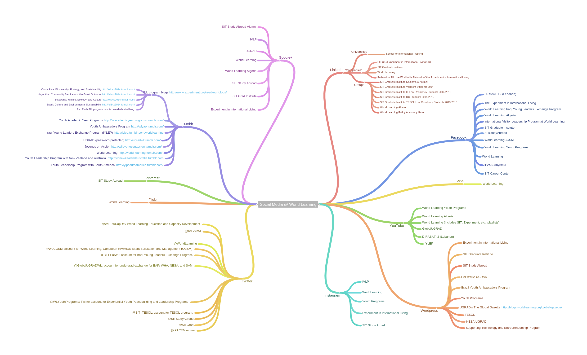

Creating new content
- Communicating who we are to a larger audience
- Building audiences for long-term messaging and advancement
- Using new techologies to become our own storyteller
2014-15 UGRAD students
Graphics simplify dense information & attract large audiences.
Graphics don't need to be elaborate...

Media mentions

Social Media @ World Learning
What do we know about our audiences?

Our online audience skews young and female.
Varying growth rates for IDEP accounts

Unique for World Learning, majority of IDEP Facebook audience non-American

IDEP Twitter growth consistent, but low

Likewise, significant non-U.S. Twitter followers

Teens & social media use

Migrating to Instagram & chat applications
What's next?
- Creating content & storytelling
- Journalism-style profiles of our work
- Further video projects
- Revamped World Learning website and blog
- Expanded partnerships
- Explore fellowships & mentorships
- We are just getting started
Thank you!
kimberly.abbott@worldlearning.org
202-441-4404